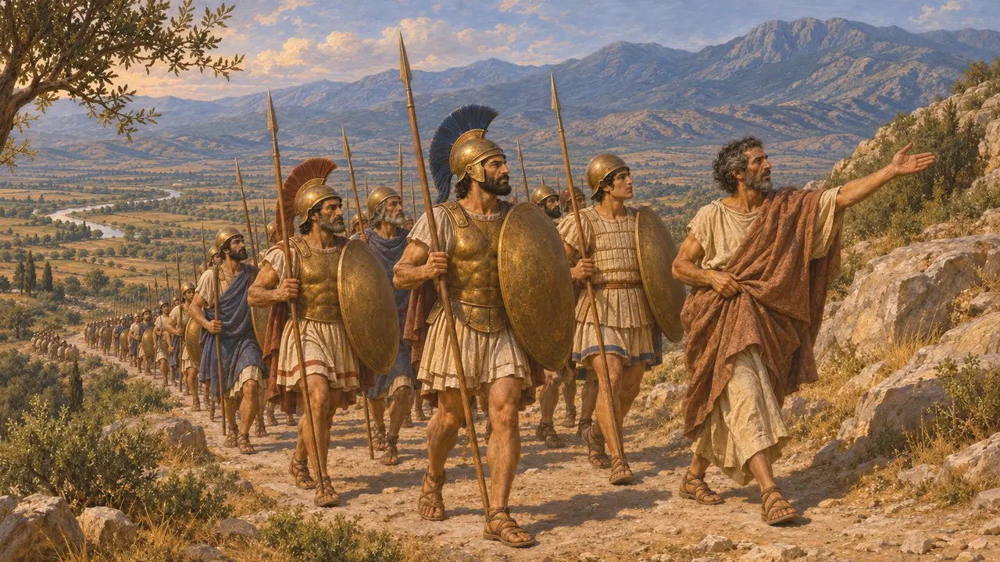
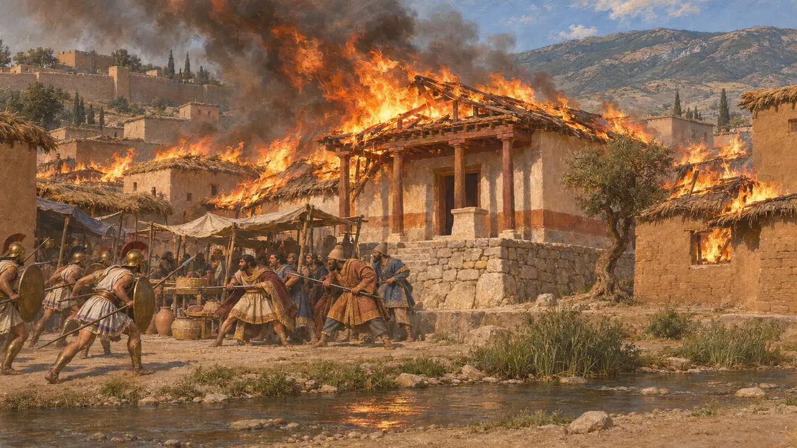
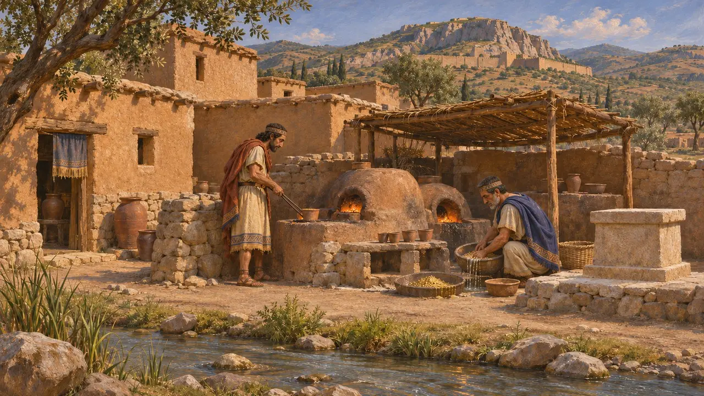
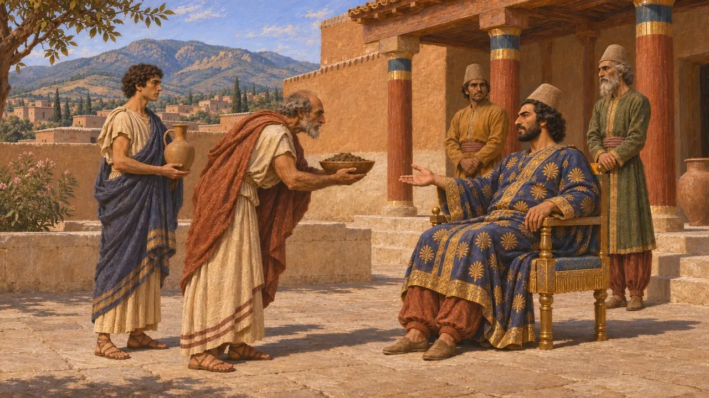
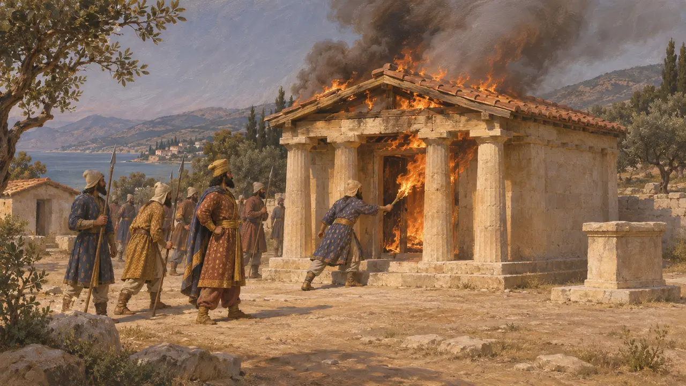
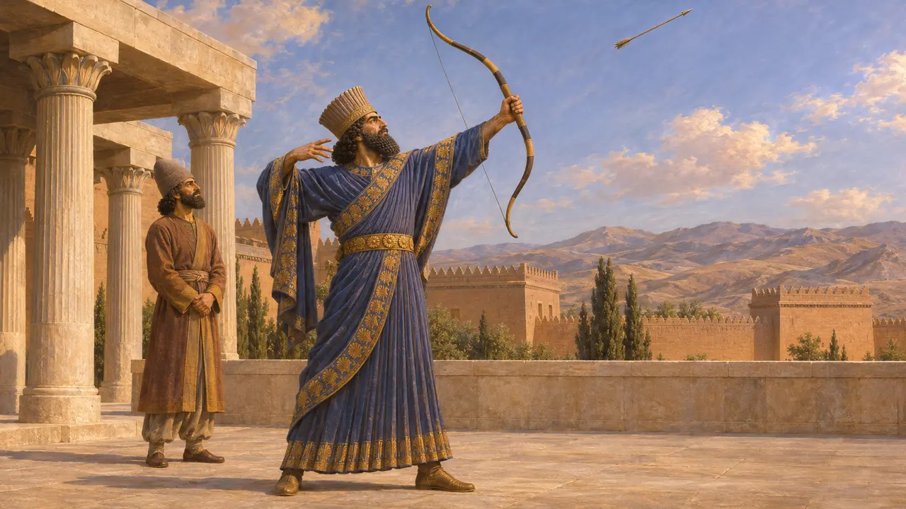

Encyclopedia › Battles and events

The burning of Sardis
Ionian and Athenian raid on the Lydian satrapal capital, 498 BCE
In the game: Level 7: Sardis Burns
In 498 BCE an army of rebel Ionians, with Athenian and Eretrian allies, marched inland and took the lower city of Sardis, seat of the satrap Artaphernes. Fire spread through the town and destroyed the temple of the goddess Cybebe. Herodotus treats the raid as the cause of the Persian wars against Athens and Eretria.
In the game: The game shows the Ionians taking Sardis except the citadel, and fire spreading through the reed roofs and the temple of Cybebe. Darius's oath of vengeance comes from a story in Herodotus, not from any Persian record.

The march from Ephesus
Ancient accountHerodotus says Aristagoras of Miletus won twenty Athenian ships for the revolt, and Eretria sent five more. The army sailed to Ephesus, left the ships at Coressus, and marched up the Cayster valley and over Mount Tmolus with Ephesian guides. They took Sardis without a fight, but the satrap Artaphernes held the citadel with a sizeable force.
Herodotus 5.97-100

The fire and the temple of Cybebe
Ancient accountHerodotus says most houses were of reed, or of brick under reed roofs, so when one soldier set a house alight the flames ran through the whole town. Trapped Lydians and Persians gathered in the market place by the Pactolus and fought back, and the Greeks withdrew to Tmolus. The temple of Cybebe, the local mother goddess, burned as well. Persian troops then caught the retreating army near Ephesus and defeated it.
Herodotus 5.101-102

What the excavations show
In the recordExcavators at Sardis have found Lydian houses of mud brick and rubble near the Pactolus, and a sixth-century gold refinery beside an altar probably sacred to Cybebe. A heavy destruction layer marks Cyrus's capture of the city about 547 BCE. No layer has been securely tied to the fire of 498 BCE, and the temple of Cybebe itself has not been found.
G. M. A. Hanfmann, Sardis from Prehistoric to Roman Times, 1983; A. Ramage and P. Craddock, King Croesus' Gold, 2000

Rebels or foreign raiders
DisputedNo Persian text mentions the raid, and the story rests almost entirely on Herodotus. He says Athenian envoys had given earth and water to Artaphernes, about 507 BCE by modern dating. In Persian eyes Athens may therefore have been a subject city in revolt rather than a foreign power. Numbers are uncertain too: the crews of twenty-five ships and the Ionians together were perhaps a few thousand men, and no source counts the garrison.
Herodotus 5.73; P. Briant, From Cyrus to Alexander, 2002

Revenge for the temples
Ancient accountHerodotus says the Persians later gave the burned temple of Cybebe as their reason for burning the temples of Greece. When Datis took Eretria in 490 BCE, his men burned its sanctuaries in return for those at Sardis. Herodotus builds the whole war as a chain of reprisals, a frame that may simplify the King's wider aims in the west.
Herodotus 5.102; Herodotus 6.101

Darius and the arrow
Later legendHerodotus tells that Darius, told the Athenians had helped burn Sardis, asked who they were, shot an arrow into the sky and prayed to Zeus for vengeance. He then ordered a servant to tell him three times at every dinner to remember the Athenians. The tale is shaped for Greek listeners: a Persian king would have prayed to Auramazda, and the scene sets up the wars to come.
Herodotus 5.105
Sources
- Herodotus 5.97-105
- Herodotus 6.101
- P. Briant, From Cyrus to Alexander, 2002
- O. Murray, The Ionian Revolt, Cambridge Ancient History IV, 1988
- G. M. A. Hanfmann, Sardis from Prehistoric to Roman Times, 1983
- A. Ramage and P. Craddock, King Croesus' Gold, 2000